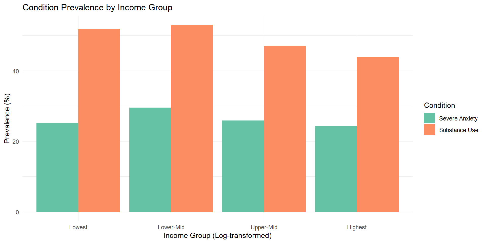

Socioeconomic Drivers of Health
Income, Anxiety, and Substance Use
Alma Ben Zalouh & Roshinie C. De Silva
Data Overview
We linked two primary datasets for this analysis:
- Patients Dataset: Demographic info (Income, Age, Gender)
- Conditions Dataset: Clinical records (SNOMED codes for Anxiety and Substance Use)
Data cleaning: - Removed deceased patients - Removed impossible ages - Removed extreme income outlier ($20) - Kept living adults aged 18+ - Log-transformed income to address right skew
Population Demographics
A look at our cohort distribution across age groups and gender.
| Age Group |
Gender |
N |
Mean Age |
Mean Income ($) |
Anxiety (%) |
Addiction (%) |
| Under 35 |
F |
728 |
25.9 |
95,148.2 |
18.0 |
31.2 |
| Under 35 |
M |
665 |
26.2 |
87,250.5 |
10.7 |
32.2 |
| 35 and over |
F |
1577 |
55.5 |
91,569.0 |
37.0 |
54.4 |
| 35 and over |
M |
1486 |
55.9 |
93,418.5 |
27.1 |
57.7 |
Income vs. Condition Prevalence
Does earning more correlate with lower health risks?

Statistical Results: Addiction (35 and over)
Logistic regression — Addiction ~ Income + Gender
| (Intercept) |
7.825 |
0.385 |
5.348 |
0.000 |
3.694 |
16.696 |
| income_log |
0.841 |
0.035 |
-4.936 |
0.000 |
0.785 |
0.901 |
| genderM |
1.154 |
0.073 |
1.955 |
0.051 |
1.000 |
1.332 |
Higher income is associated with lower odds of addiction in adults 35 and over (OR = 0.85, CI [0.80-0.91])
Statistical Results: Anxiety (All Adults)
Logistic regression — Anxiety ~ Gender + Age Group
| (Intercept) |
0.209 |
0.081 |
-19.264 |
0 |
0.178 |
0.245 |
| genderM |
0.616 |
0.070 |
-6.926 |
0 |
0.536 |
0.706 |
| age_group35 and over |
2.838 |
0.086 |
12.162 |
0 |
2.404 |
3.365 |
Women are significantly more likely to have anxiety than men (OR = 0.62 for males)
Anxiety nearly triples after age 35 (OR = 2.84)
Limitations
- Analysis shows associations, not causality
- Based on synthetic data — may not reflect real-world patterns
- Other confounders not captured (trauma, social isolation, employment)
- Age calculated using 2024 as reference year
Conclusion
“The socioeconomic gradient in addiction only emerges after age 35 — suggesting cumulative economic disadvantage over time drives substance use disorders more than current income alone.”
“Gender differences in anxiety are consistent across age groups and independent of income.”